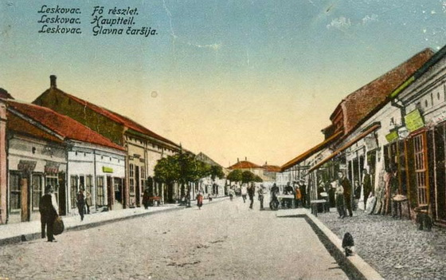

Leskovac ima dugu i bogatu istoriju. Na ovom prostoru postojala su naselja još u vreme Rimskog carstva, a grad je kroz vekove bio poznat po trgovini, zanatstvu i tekstilnoj industriji.
U 19. i 20. veku Leskovac je bio jedan od najrazvijenijih industrijskih centara Srbije i bivše Jugoslavije. Zvali su ga „srpski Mančester“ zbog velikog broja tekstilnih fabrika.
Danas je grad spoj tradicije i modernog života, koji čuva svoje korene, ali i teži savremenom razvoju i turizmu.
Najvažniji istorijski događaji
- 1395. - Prvi pisani pomen Leskovca
- 1878. - Oslobođenje od Turaka
- 1930. - Razvoj tekstilne industrije - „srpski Mančester“
- 2025. - Leskovac - grad tradicije, ukusa i gostoprimstva